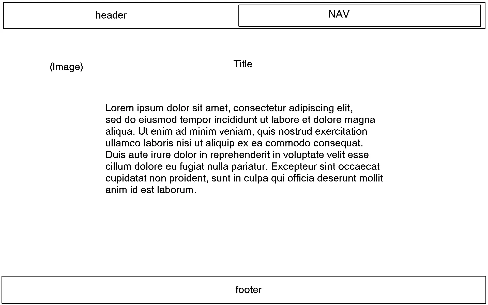
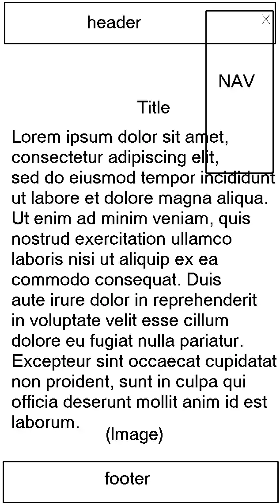

Site Name:
The Plan of Salvation
Site Purpose:
To share a simple description of key points of the Plan of Salvation.
Scenarios:
Why should I care about this Plan?
What do I need to do to benefit from this Plan?
Color Schema:
Standard, white with black background.
Blue header/footer with white text (#007da5)
Typography:
Noto Sans JP (You're looking at it too!)
Location: Whole page. Uniform will be best.
Wireframe:
Desktop Mode:

Mobile Mode:
